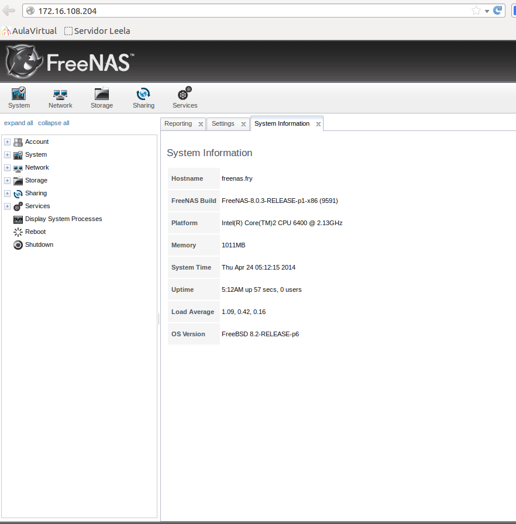

- Módulo: Sistemas Operativos
- Título del trabajo A1: Almacenamiento NAS
- Componentes del grupo: Beatriz de Armas Salvador
- Curso Académico: 2013/2014
- Fecha de entrega: 24 de Abril de 2014
Crear la MV en VBox.Elegir MV del tipo FreeBSD u OpenBSD.

Además de un disco duro virtual con FreeNAS, debemos añadir a la máquina virtual 2 discos más de 2GB cada uno, para volumen de almacenamiento.
Instalamos el SO, y configuramos la ip, la máscara y el DNS
Ip y máscara
DNS
Acceder al PANEL de configuración de FreeNAS desde una navegador web. Usando la IP del servidor FreeNAS.
Vamos a la "shell" del SO, y creamos dentro de "/mnt/" el "/volumen1"
Para acceder al PANEL de configuración (GUI, por entorno gráfico) de FreeNAS, iniciamos un navegador web desde otro PC de la red. Y navegamos usando la IP del servidor FreeNAS.
Cuando estamos en el PANEL nos disponemos a crear un volumen:
Ejecutar df -hT (Para comprobar que está montado el volumen1)
Ejecutamos mkdir /mnt/volumen1/public
Ejecutamos chmod 777 /mnt/volumen1/public (Creamos una carpeta de uso público lectura/escritura).
Creamos un recurso compartida CIFS/SMB, ir a "Sharing/Compartido" -> "Añadir recurso CIFS". Path a /mnt/volumen1/public.
Probar que podemos acceder a dicho recurso compartido SMB/CIFS, desde otro equipo de la red. Por ejemplo, usando un cliente Windows7.
ç